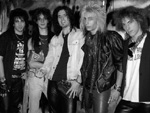
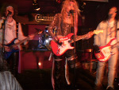
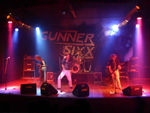
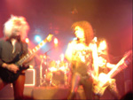
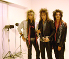

Biografia
Gunner surge a fines del año 2002 como Gunner Sixx. Rodrigo Bugallo (guitarra líder) y Mariano Angiolillio (ex baterista), quienes cursaban en el mismo colegio secundario, deciden formar una banda con marcadas influencias de hard rock 80's. Para ello, convocan a otro amigo del secundario, Emmanuel Blandini (guitarra rítmica) para la guitarra base; y al Colo (ex bajista), un conocido de Mariano para tocar el bajo.

En sus comienzos la banda fue principalmente una banda de covers. En los ensayos sonaban temas de Mötley Crüe, Bon Jovi, Poison, Europe, Skid Row, etc. Si bien durante esos meses se probaron varios cantantes ninguno se adaptaba a las necesidades de la banda y por esa razón, Roxx toma el mando de la voz además de ser la guitarra líder del grupo.
• Principios del 2003: Con la banda establecida y ensayando
regularmente, recibieron un llamado de Marcelo Viera (guitarrista de Louder , banda argentina
tributo a Mötley Crüe), quien organizó una fecha en Asbury Park (Flores) para el 10 de mayo y los invitó como banda soporte del show. La lista de temas de ese día fue: Cry Tough y No More Lookin' Back de Poison; Starry Eyes de Mötley Crüe; One Wild Night y Breakout de Bon Jovi, 3 temas propios: Rockin' In The City, Sometimes y Crazy Nites; y cerraron con el cover de Poison: Look What The Cat Dragged In. Esta fue la primera presentación oficial de la banda.
A fines de junio, Marcelo los convocó para una nueva fecha en LA ROCKA, sin embargo 10 días antes del show por problemas personales, el bajista abandona la banda; es en ese momento donde aparece Hernán Mastrogiacomo, quien estuvo ligado a la banda desde los comienzos.
En este show, presentaron un tema nuevo: 'Secrets Of Loneliness' (Letra: Hernán Mastrogiacomo) que aparece en el demo que grabarían más adelante.
Desde ese momento, la banda quedó establecida con: Roxx en voz y primera guitarra, Emmanuel en segunda guitarra, Hernán en bajo y Mariano en batería.
• 2004:Comienzan el año tocando en El Hangar teloneando a Kamikaze. Luego tocaron por primera vez en La Colorada, junto a Watchmen y realizaron un tributo a Poison en Acatraz, también, conocieron a Juan Manuel Biott quien les pasó un demo en el que interpretaba 'Spread Your Wings' de Queen. Decidieron empezar a ensayar con él mientras la banda seguía presentandose en vivo con Roxx en la voz. El show del 11 de septiembre junto a Louder, en Crimson, fue la presentación oficial del nuevo vocalista. A partir de ese momento, se presentaron con esta formación y cerraron el año en Acatraz, fecha en la cual Mariano no pudo tocar y Walter, un conocido de la sala donde ensayaban, lo reemplazó en la batería. El año 2004 se cerró. Sin embargo la tragedia ocurrida en el boliche Cromagnon afectaría a todas las bandas del "Under" a partir del 2005.
• 2005: Estaba muy difícil conseguir lugares para tocar y decidieron cambiar de baterista por razones musicales. Walter quedó como baterista e hicieron una nueva fecha a mediados de Marzo en Acatraz. Debido a la poca disponibilidad horaria de Walter, se les tornaba muy difícil ensayar con regularidad y éste tuvo que dejar la banda. A mediados de año la banda comenzó a ensayar con Gustavo (ex baterista), conocido de Emmanuel, y sobre fines de año, pudieron concretar una nueva fecha en Acatraz.
La banda comenzó a grabar el demo, parte en Estudios Doble B (de Leandro Bordicelli) y parte en el estudio de Hernán. Demandó alrededor de seis meses terminar la grabación, mezcla y masterización del mismo. Luego de la fecha en Acatraz, Gustavo deja la banda por problemas personales, mientras la banda continúa con la grabación del demo.
• 2006: El demo estaba en plena grabación, mientras buscaban baterista para las fechas en vivo. Es aquí donde apareció Germán Calero (actual baterista), un amigo y seguidor de la banda en los años anteriores, y de este modo la banda quedó establecida con Juan Manuel en la voz, Roxx en guitarra líder, Emmanuel en guitarra rítmica, Hernán en bajo y Germán en batería.
Luego de la primer fecha en La Colorada, en marzo, se terminó el demo, que cuenta con 7 temas propios: 'Desire', 'Dirty Love', 'Can't Prove It', 'Rockin' In The City', 'Secrets Of Loneliness', 'Someone To Love' y 'Over Again''.

La venta del demo fue todo un éxito. Se agotaron los primeros 200 ejemplares vendidos en los shows, entregados a radios, lugares para tocar, discográficas y productoras.
Durante este año, realizaron muchísimas presentaciones, entre las que se destacan tres "La Colorada" como banda principal, Centro Cultural Mariano Moreno (San Telmo) junto a Zelen y una fecha junto a Spanish Fly (banda tributo a Van Halen) en Blues Special Club. En septiembre, la banda tocó, nuevamente, en La Colorada y cerraron el año, el 1 de diciembre en Acatraz.
Durante los shows del 2006, presentaron dos temas nuevos que no están en el demo llamados 'Till I Reach The End' y 'Holdin' On'. A fines del 2006, fueron convocados para participar en un Álbum Tributo a Europe. Grabaron el tema 'Love Chaser', del álbum 'The Final Countdown' en Estudios Doble B.
• 2007: Comienza con una serie de shows por Buenos Aires y participan del concurso "The Cavern Rock Festival" organizado por The Cavern Club Bs. As., realizando varias presentaciones a lo largo de todo el año, quedando entre las primeras diecisiete bandas de las doscientas veinte concursantes. En agosto de ese mismo año ingresan en el ranking de la radio "Hardrockin' 80s" de Missouri, USA, y en octubre, son elegidos como mejor banda del mes. A mediados de noviembre entran al estudio y comienzan con la grabación de un EP adelanto de lo que será el primer disco de la banda. El mismo está compuesto por tres canciones nuevas de propia autoría y una nueva versión de I can’t prove it.
En ese mismo mes se realiza un show despedida, último show de Juan Manuel Biott como cantante de Gunner, ya que por razones personales decide viajar y se ve obligado a dejar el grupo, previamente dejando grabadas todas las pistas de voz del EP, en el cual la banda siguió trabajando.
• 2008:La banda comenzó a audicionar cantantes, luego de meses de trabajo y de probar músicos, gracias a un aviso, Aaron Briglia se comunica con Roxx y luego de algunas audiciones queda en la banda como cantante.
Meses mas tarde, finalizando el año, Hernán Mastrogiacomo decide abandonar el grupo por cuestiones personales emprendiéndose así la búsqueda de un nuevo bajista.
• 2009: Gunner entra al estudio Synchro Records para comenzar la grabación de 'Desire', primer álbum de la banda, producido por Esteban Gatti. Durante los primeros meses del año, Roxx se comunica con distintas discográficas, hasta conseguir el primer contrato junto a Retrospect Records. A comienzos del 2009 Rubén Estrada ingresa como bajista, participando en la grabación del disco y en una serie de shows que se realizan durante todo el año por Capital.
• 2010: Rubén abandona la banda. Gunner es convocado para tocar en una nueva edición del festival 'Glamnation Party' realizado en The Roxy Live. La banda finaliza la grabación de 'Desire'. Luego Germán le propone a Pablo Ansaldi, quien era un viejo amigo de la banda, tomar el lugar de bajista solo por algunos shows, pero la química fué tan buena que Pablo termina incorporándose oficialmente a Gunner como su nuevo bajista. A partir de allí, la banda comienza una serie de shows por el interior del país bajo el marco de la presentación de 'Desire'.
• 2011: Para los primeros meses se edita 'Desire' en USA con la compañía Retrospect Records, confirmando la primer gira en dicho país debido a la buena recepción del público. Luego de algunas negociaciones se decide dar de baja a la serie de shows y festivales en Estados Unidos debido a problemas legales con Nikki Sixx, la banda se ve forzada a cambiar de nombre, pasan de llamarse Gunner Sixx a GUNNER y así comienzan promocionando 'Desire'.
• 2012: La banda realiza la presentacion oficial de Desire con una serie de shows por todo el pais , se lanzan los tres cortes de difusión Rockin' in the city, Someone to love y Holdin' on como videos promocionales rotando por radios y televisión, tambien se incluye como miembro estable a Marcos Prevalil en los teclados quedando conformada una estructura de 5 músicos con los cuales se comienza con la composición de nuevo material.
• 2013: Se da inicio a las sesiones de grabación de Keep Fighting. El disco contiene 13 canciones, manteniendo la escencia, los ritmos, la melodías, la fuerza, y continuando todo lo que se comenzó con Desire pero también mostrando una puesta más grande y un avance en cuanto a sonido. Se utilizan varios estudios para la grabación, mezcla y mastrización del álbum trabajando así con distintos técnicos e ingenieros en sonido. Mientras tanto se siguen realizando shows, viajes y se comienza con toda la preparación de una nueva puesta en escena para lo que sera la presentación oficial del Fighting tour 2014.
Luego de cumplir con los compromisos asumidos, Aaron deja la banda por motivos personales. El 29 de octubre se hace oficial el ingreso de Pyper Muguertegui como cantante para realizar la presentación de Keep Fighting con un show en Espacio Cultural ex "La colorada"
• 2014: Gunner comienza el año con presentaciones en capital federal y el interior del país. Paralelamente comienzan a preparar el material para su tercer disco de estudio con la idea de grabarlas sobre fines de año.
Gunner.